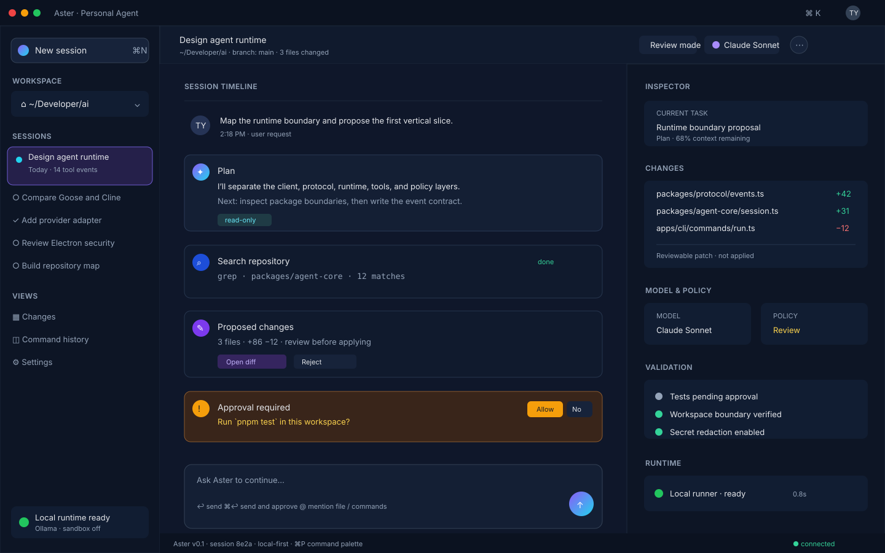

Kestrel User Guide
Kestrel is a local-first AI frontier-agent prototype for macOS. The current release is a deterministic, no-API-key vertical slice: it inspects a workspace, emits a shared session event stream, and presents the foundation through a CLI and an Electron desktop shell.
This guide describes what works today and distinguishes it from 2026_09_19_custom_ai_frontier.md.
Requirements
- macOS with Node.js 20 or newer
- npm and a terminal
- This repository checked out locally
Apple Silicon and Intel Macs are supported by the TypeScript/Node workflow. A signed .app, DMG, or notarized release artifact is not published yet.
Install and verify
npm install
npm run typecheck
npm test
npm run buildRun the CLI locally
npm run start:cli -- plan "Map the current project"
npm run start:cli -- run "Inspect the source tree"
npm run start:cli -- plan --workspace /path/to/project "Summarize this workspace"
npm run start:cli -- run --json "Inspect this workspace"JSON mode writes versioned JSONL events to stdout. Failures use stderr and a non-zero exit code.
Run the Electron desktop shell
npm run start:desktopAfter changing desktop code, close every existing Kestrel window and start a fresh process. npm run start:desktop rebuilds the main process, preload bridge, and renderer before opening the window.
If a previous build reported ERR_FILE_NOT_FOUND, stop that Electron process and rerun the command from the project root. The build copies the renderer to dist/electron/renderer/index.html and the main process verifies that absolute path before loading it.
The desktop workspace is connected to the shared runtime. Enter a workspace path (use . for the current project), choose Plan, Review, or Act, type a task, and select Run session. Runtime events appear in the center timeline. Use New session to clear the timeline.
The current provider is deterministic and task-sensitive, but it is still a local mock rather than a real language model and does not require an API key. File edits, shell commands, approvals, hosted model providers, and session persistence are not implemented yet.
Build for distribution
npm run build
node dist/cli.js plan "Inspect this workspace"
./node_modules/.bin/electron dist/electron/main.jsThe build copies the Electron renderer into dist/electron/renderer. dist/ is compiled output, not a self-contained signed/notarized macOS application. Packaging is not configured yet.
Current mock UI
The design mock includes the workspace/session rail, session timeline, composer, inspector, and runtime status. The repository keeps the current mock screen as an SVG:

The mock is a design reference. The implemented shell is smaller and does not yet implement the live timeline, approvals, diff viewer, or inspector.
Design verification
| Design area | Status | Current state |
|---|---|---|
| Shared runtime and protocol | Partial | Shared TypeScript runtime and event types exist. |
| CLI client | Partial | plan, run, --json, and workspace selection work. |
| Electron client | Partial | Secure workspace UI, preload bridge, runtime IPC, and live timeline exist; approvals, diffs, and settings are not wired. |
| Workspace read/search | Partial | Top-level workspace summary exists; bounded reads/search are not implemented. |
| Patch editing and Git tools | Not started | No mutation or Git tool implementation exists. |
| Shell runner and approvals | Not started | No command runner or policy enforcement exists. |
| Providers | Not started | Only a deterministic mock provider exists. |
| Persistence/resume/export | Not started | No SQLite session store exists. |
| MCP/plugins | Not started | No MCP or plugin surface exists. |
| Packaging | Not started | No signed/notarized macOS artifact is configured. |
| Evaluation fixtures | Partial | Basic runtime tests exist; the design regression suite does not. |
The current implementation satisfies the early protocol-first vertical-slice direction, but not the later phases. The next highest-value steps are a real provider adapter, bounded read/search and patch tools, policy enforcement, persistence, and a typed Electron preload bridge.
Troubleshooting
If installation fails, confirm node --version is 20 or newer and retry npm install from the project root. If the desktop shell does not open, run npm run build and then launch ./node_modules/.bin/electron dist/electron/main.js.